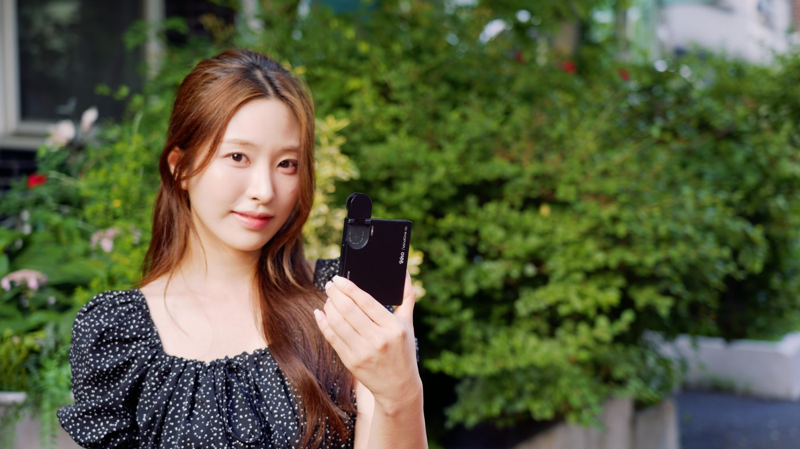

iKKO Mind One K Pro
블랙베리 향의 초소형 폰. 예쁜 세컨드로는 이야기가 되고, 메인폰으로는 아니다.
한 줄 결론
메인 스마트폰으로 사지 않는다. 통화·스피커·케이스 마감·AP가 기본기를 못 채운다. 쿼티 케이스·회전 카메라 감성을 원하는 세컨드·취미 기기일 때, 가격 기대치는 크게 낮춘다.
채널 에피소드를 Discover. Design. Detail. 순으로 정리한 와이어 본문입니다. 자막 기반 초안.
Discover
오디오 브랜드 iKKO의 4인치급 아몰레드 초소형. 카드와 비슷한 세로감. 직구/정발은 컬러·A/S가 다르다. 얼리버드+케이스 합산이 80만 원대였다면 가성비가 안 맞는다 — 채널은 장난감 30만 원대 감각으로 본다.
Design
Helio G99·4.02" AMOLED·50MP 소니·2200mAh. 스냅인 쿼티 케이스는 한글 각인·3.5mm+Hi-Fi DAC·500mAh 보조배터리. 맥세이프 자석은 있으나 무선충전은 없다. 정사각에 가까운 화면은 레터박스·키보드 가림이 심하고, 카툭튀는 책상 놓기 불안하다.
Detail
스피커·마이크가 업무 통화를 버티지 못한다. 카메라만 기대 이상. AI는 가벼운 텍스트는 오프라인, 생성은 온라인. 케이스 탈부착 파손 제보가 있다. 메인폰 비추천.